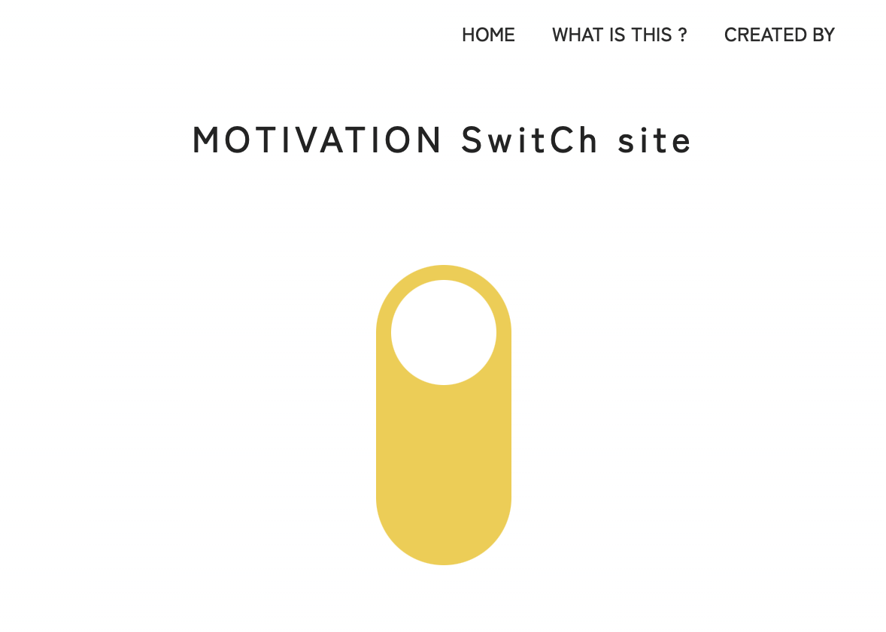

MOTIVATION SwitCh site
やる気スイッチON、OFFのあるあるをまとめたWebサイトです。
やる気スイッチは人それぞれで、サイトを通してコントロールするのは難しいと考えたため、サイトのメインは楽しく見れるあるある集サイトという方向性で企画し、サイトの目的は「やる気スイッチがOFFの状態もちょっと好きになれる」こと。

クライアント
---
担当した作業
---
制作期間
2025.6.2 - 7.14
使用したソフトなど
Visual Studio Code, Gemini
注意・工夫した点
視覚的なビジュアルとしてスイッチを配置しました。また、「やる気スイッチがON/OFFになるとき…」のセクションからグラデーションをかけてスイッチの切り替えを催促しました。
ナビゲーションの固定や、前のページに戻るボタンなどの配置でサイト内を行き来しやすくしたり、レスポンシブの対応、marginやpaddingをこだわるなど全体のレイアウトが見やすくなるようにしました。
課題
JavaScriptが苦手でGiminiに頼った部分が多かったため、勉強したいと思います。